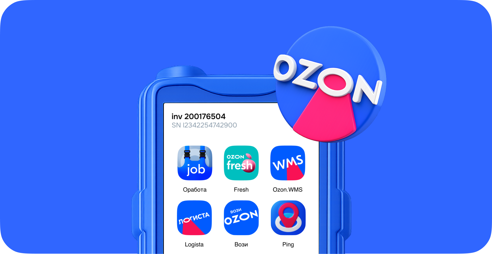
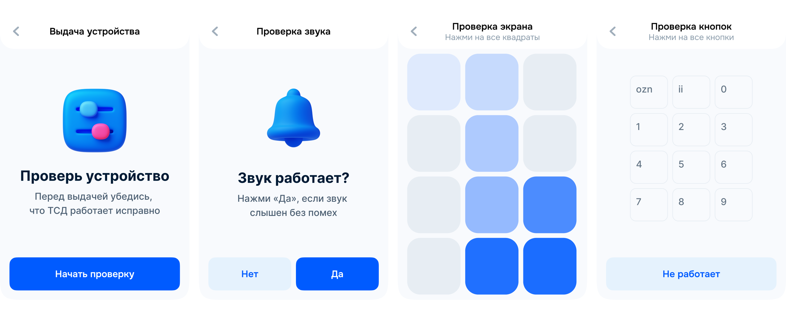

Учет ТСД
Учет устройств повысит прозрачность процесса и упростит поиск проблем

Ozon.Updater — единая точка входа во внутренние приложения для сотрудников склада. С 2025 года я единственный дизайнер продукта: развиваю его и проектирую новые сценарии, включая выдачу и возврат устройств
Сотрудники склада каждый день получают ТСД для работы со складскими операциями и сдают их в конце смены. Проверка устройств выполняется вручную и занимает время. Бизнесу сложно отследить, у кого и на каком этапе устройство вышло из строя, чтобы находить ответственных
Провела интервью со стейкхолдерами и сотрудниками склада, чтобы понять процесс, основные боли и ограничения с обеих сторон. Выяснила, что отсутствие автоматизации и прозрачного учета мешает бизнесу контролировать процесс, а сотрудникам быстро выполнять работу
Бизнес терял деньги из-за поломок, потерь устройств и долгого ремонта
Сложно понять, на каком этапе устройство вышло из строя и кто за это отвечает
Сотрудники сталкивались с очередями на выдаче и потерей времени при замене неисправных устройств
Техподдержка тратила много времени на поиск проблем, а устройства могли надолго зависать в неопределенном статусе
Учет устройств повысит прозрачность процесса и упростит поиск проблем
Пошаговая выдача устройства ускорит процесс и снизит количество ошибок
Чек-лист для техподдержки ускорит диагностику и возврат устройств в работу
Спроектировала систему учета ТСД и пошаговый сценарий активации устройства. Чтобы снизить нагрузку на пользователя, добавила легкий игровой элемент: проверку экрана через плавное закрашивание квадратов.

Интерактивный сценарий был новым паттерном для складского продукта, но мне удалось провести это решение и вовлечь команду в новый подход. В итоге бизнес получил систему учета ТСД, а пользователи — понятный инструмент для рутинного процесса. В июне 2026 пройдет UAT, после которого я дополню кейс результатами